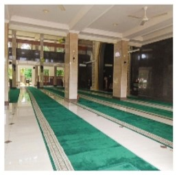
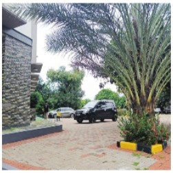

Masjid Darussalam
Masjid Darussalam Perumahan Griya Tugu Asri merupakan salah satu masjid yang aktif juga mengadakan kajiaj. Setiap Minggu ada kajian rutin dan setiap bulan sering juga kajian umum.
Beralamat lengkap di Perumahan Griya Tugu Asri Jl RTM RT 001/019 Kelapa Dua Cimanggis Depok Jawa Barat 16451. Masjid yang didirikan pada tahun 1997 ini dan dilakukan pembangunan ulang pada tahun 2018 ini memiliki luas tanah 1.458 m2 , luas bangunan 2.556 m2.
Masjid ini didesain dengan konsep terbuka. Semua sisi tidak dibatasi dengan tembok tetapi dibiarkan terbuka. Ada dua lantai di tempat ini. Berada di sini seperti namanya Griya Tugu Asri, tempat ini sangat sejuk dan asri dikelilingi oleh pohon-pohon hijau dan rimbun.
Pemilihan cat berwarna krem dan lantai keramik senada membuat hawa sejuk makin terasa di tempat ini. Sangat bersih sekali masjidnya. Dilengkapi dengan kamar mandi dan tempat wudhu yang luas, sangat bersih dan wangi.
Meski tidak sering ke tempat ini tapi biasanya dalam sebulan pak su selalu menyempatkan diri kesini. Meskipun hanya sekedar shalat wajib saja. Santap Malam di Bakmi Jogja Mas Goen Kelapa Dua Dilihat dari info masjid di area papan pengumuman disana terlihat bahwa Dewan Kemakmuran Masjid sangat aktif menyelenggarakan kajian rutin maupun umum. Juga ada kajian muslimah hingga kajian anak-anak. Ada kelas belajar tahsin juga untuk anak-anak.